Saúl Beceiro Novo, Ph.D.
Soy físico nuclear experimental y trabajo en la intersección entre sistemas nucleares exóticos, instrumentación de detectores y aplicaciones reales como la imagen por neutrones y la detección y mitigación de radón.

Sobre mí
Mi trabajo conecta investigación de frontera en física nuclear con colaboración internacional, desarrollo de detectores y educación en física basada en evidencia.
Perfil científico
Asesor científico: INTERA
Me especializo en física nuclear experimental, con enfoque en detectores de blanco activo, reacciones con haces exóticos y técnicas nucleares aplicadas. Mi investigación abarca astrofísica nuclear experimental, estructura nuclear, instrumentación de detectores, imagen por neutrones, medidas de radiación ambiental y detección y mitigación de radón.
Perfil educativo
Además de mi investigación, desarrollo currículos de física inclusivos y accesibles, así como entornos de aprendizaje activo para cursos introductorios de gran escala, especialmente dirigidos a estudiantes de ciencias de la vida.
Además de mi docencia habitual en la Universidade da Coruña, colaboro en actividades docentes en Michigan State University y participo en el Structured Master Program in Mathematical Sciences de AIMS Senegal, apoyando la formación internacional de posgrado en física y disciplinas afines.
Investigación
Mi programa de investigación se centra en núcleos exóticos, reacciones nucleares e instrumentación para experimentos en instalaciones modernas de haces radiactivos.
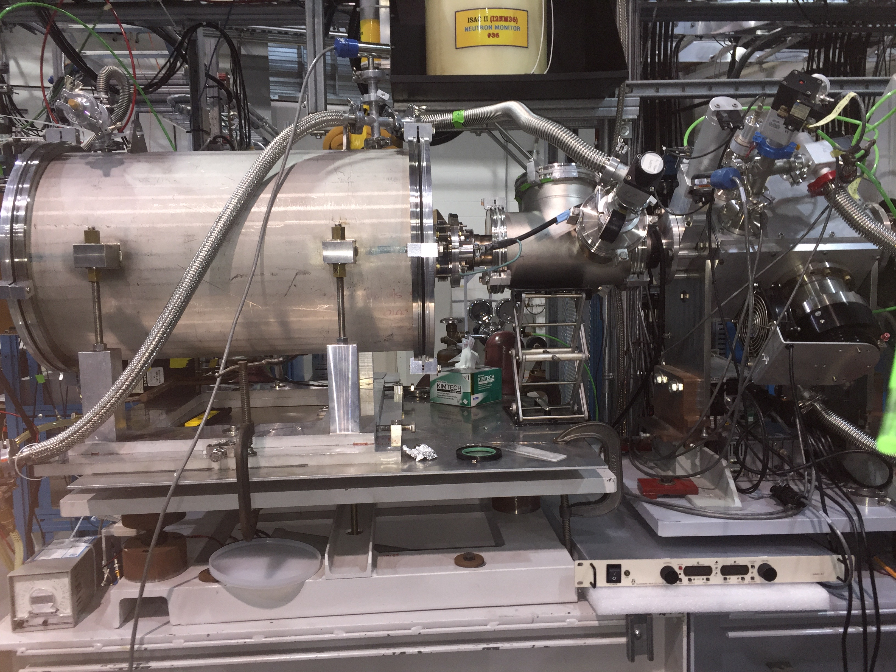
Astrofísica nuclear experimental
Estudio de reacciones nucleares relevantes para entornos astrofísicos, incluyendo procesos relacionados con la nucleosíntesis y escenarios estelares explosivos.
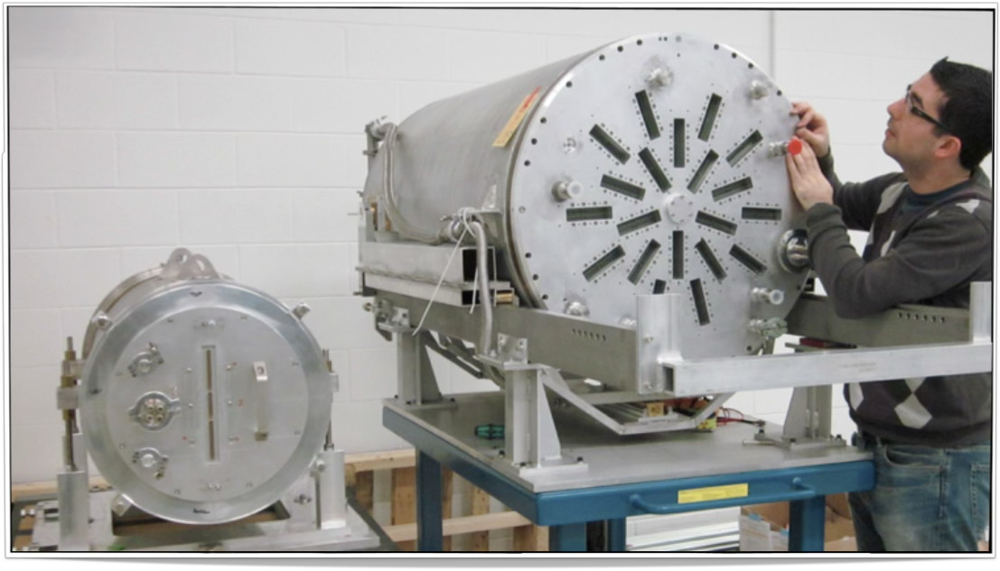
Detectores de blanco activo
Desarrollo y aplicación de cámaras de proyección temporal de blanco activo para física nuclear de baja energía y experimentos con isótopos exóticos.

Estructura nuclear
Uso de reacciones directas, reacciones de ruptura y espectrómetros solenoidales para estudiar núcleos exóticos y su estructura interna.
Aplicaciones
Una parte central de mi trabajo conecta métodos de la física nuclear con aplicaciones prácticas en monitorización ambiental, imagen y protección radiológica.
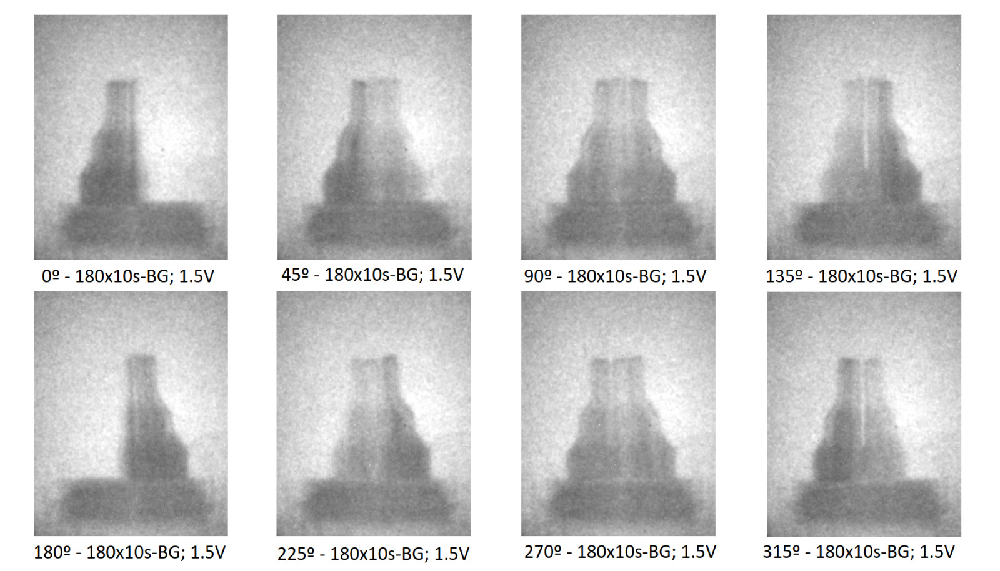
Imagen por neutrones
Desarrollo y aplicación de métodos de imagen basados en neutrones para estudios no destructivos, análisis de materiales y aplicaciones tecnológicas nucleares.
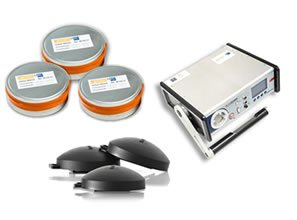
Detección y mitigación de radón
Trabajo aplicado en detección de radón, monitorización de radiación ambiental y estrategias de mitigación para apoyar la salud pública y la seguridad radiológica.
Asesoramiento científico
Actúo como asesor científico de INTERA, una empresa especializada en detección y mitigación de radón, apoyando la conexión entre ciencia nuclear, radiación ambiental y aplicaciones reales.
Proyectos seleccionados
Mis proyectos actuales y recientes combinan física nuclear experimental, desarrollo de detectores y tecnología nuclear aplicada.
Aplicaciones de física y tecnología nuclear
Medidas de radiación ambiental e imagen por neutrones. GAIN, Xunta de Galicia, 2024–2027. Investigador Principal.
Núcleos exóticos con R3B y SOLARIS
Estudio de núcleos exóticos usando experimentos R3B y SOLARIS en la Universidade da Coruña. Agencia Estatal de Investigación, 2023–2027. Investigador Principal.
Active Target Time Projection Chamber
Desarrollo de una cámara de proyección temporal de blanco activo. National Science Foundation, EE. UU., 2009–2012. Co-Investigador Principal.
Publicaciones seleccionadas
He publicado 79 artículos revisados por pares en revistas como Physical Review Letters, Physics Letters B, Physical Review C, Nuclear Instruments and Methods A y Progress in Particle and Nuclear Physics.
Docencia y desarrollo curricular
Diseño entornos de aprendizaje en física que combinan aprendizaje activo, recursos educativos abiertos, accesibilidad y pedagogía basada en evidencia.
Cursos
- Mecánica clásica
- Física cuántica
- Electromagnetismo
- Física introductoria para ciencias de la vida
- Nanotecnologías para la transición energética
- Física para estudiantes no científicos
- DATA Labs — Laboratorios de Diseño, Análisis, Herramientas y Aprendizaje para PHY251/252, apoyando el aprendizaje activo de más de 600 estudiantes al año
- Studio Physics → (aprendizaje activo basado en indagación)
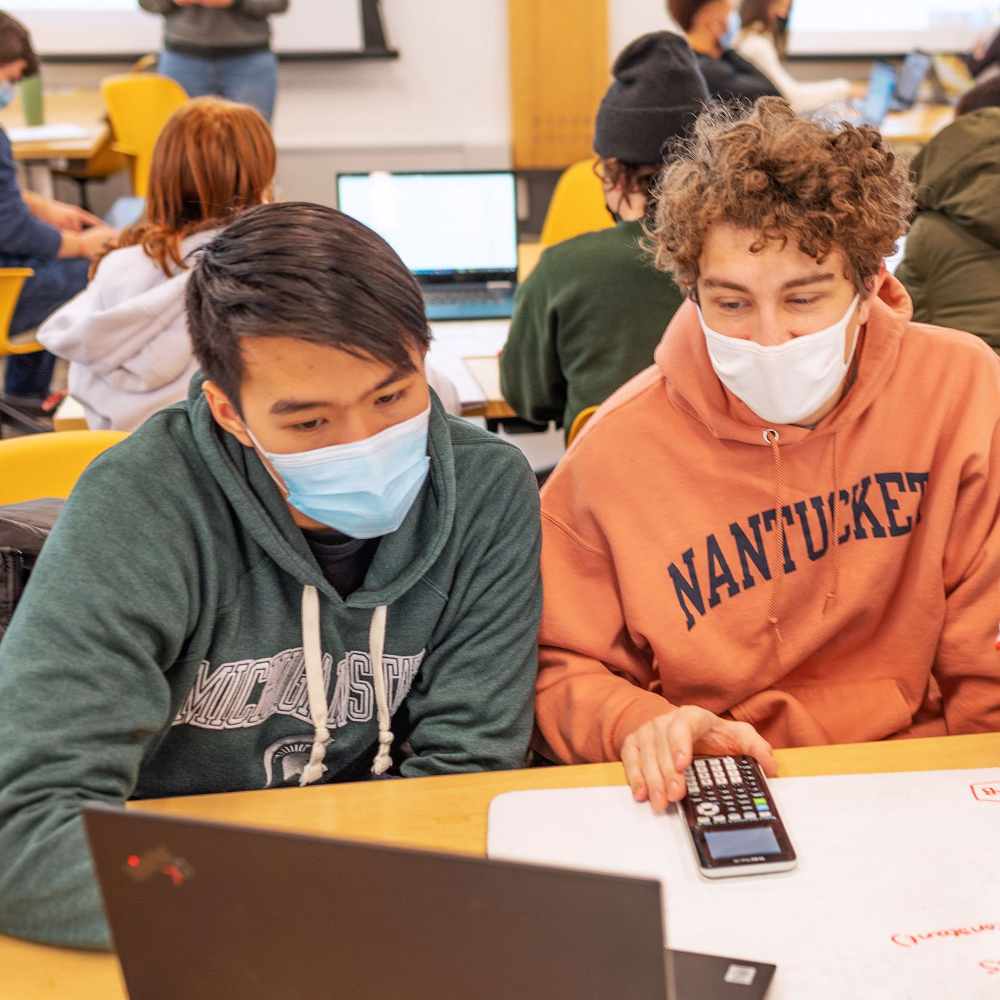
Educación abierta y libros
Desarrollo y contribuyo a recursos educativos abiertos (OER) en física, con énfasis en materiales accesibles y de alta calidad para estudiantes de ciencias de la vida.
Grupo de investigación y estudiantes
Trabajo con estudiantes y colaboradores en física nuclear, instrumentación de detectores, técnicas nucleares aplicadas y educación en física.
Grupo de investigación FiTNAE
Formo parte del grupo de Física y Tecnología Nuclear y de Altas Energías (FiTNAE) de la Universidade da Coruña, con sede en CITENI, en Ferrol.
El grupo se centra en física nuclear experimental, física de partículas y aplicaciones tecnológicas, incluyendo el estudio de reacciones nucleares con haces exóticos, desarrollo de detectores y técnicas nucleares aplicadas.
Las actividades de investigación incluyen:
- Física nuclear experimental y estructura nuclear
- Reacciones con haces exóticos y detectores de blanco activo
- Desarrollo de detectores de radiación gaseosos y de estado sólido
- Imagen por neutrones y medidas de radiación ambiental
- Detección de radón y aplicaciones de protección radiológica
- Física de altas energías y de partículas, incluyendo trabajos relacionados con LHCb
El grupo combina investigación fundamental con aplicaciones industriales y sociales, especialmente en medidas de radiación, monitorización ambiental y tecnología nuclear.
Estudiantes actuales
Imagen por neutrones
- Harriet Kumi
- Miguel Saez
Estudios de radón
- Wilmer Camero
- Emilio Lima
Machine learning
- Junior Castillo
Investigación en educación en física
- David Ramsey
¿Te interesa unirte?
Doy la bienvenida a estudiantes motivados de grado, máster o doctorado interesados en núcleos exóticos, instrumentación de detectores, imagen por neutrones, mitigación de radón o investigación en educación en física.
Colaboraciones internacionales
Mi investigación está apoyada por una amplia red internacional de colaboraciones con universidades, laboratorios nacionales e instalaciones científicas de gran escala.
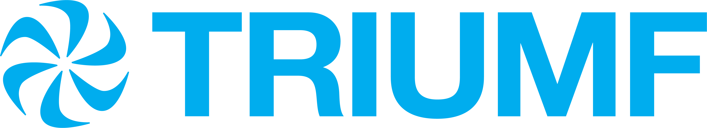
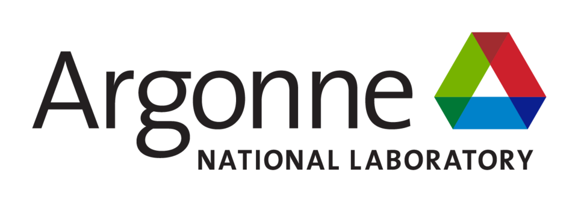
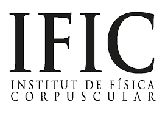
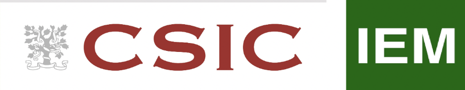
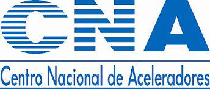
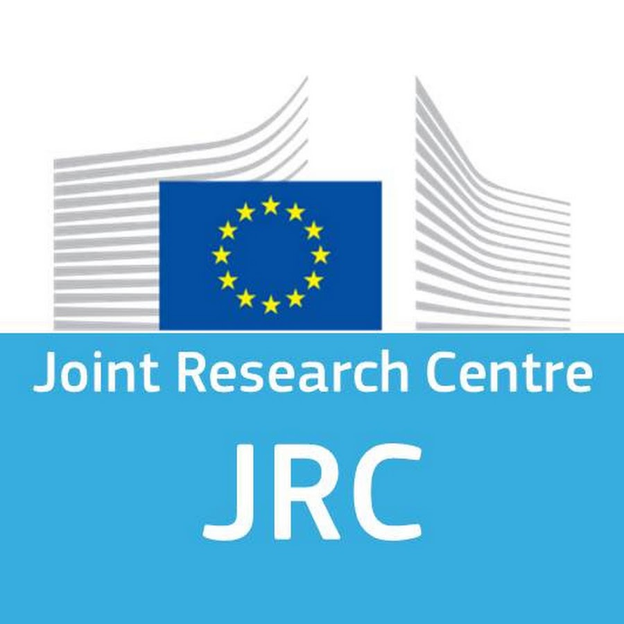
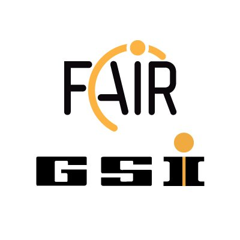
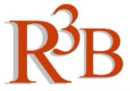
Mentoría y servicio
La mentoría de estudiantes, ayudantes docentes e investigadores en etapas tempranas es una parte central de mi actividad académica.
Mentoría
- Supervisión o mentoría de más de 500 estudiantes de grado.
- Mentoría de más de 200 ayudantes docentes de posgrado.
- Mentoría de más de 300 learning assistants de grado.
- Supervisión de tesis y participación en comités en UDC y MSU.
Liderazgo y servicio
- Director fundador del grupo FiTNAE, Universidade da Coruña.
- Presidente del grupo de trabajo High Resolution Spectrometer de R3B.
- Vicepresidente del grupo de trabajo Active Targets de R3B.
- Miembro de comités científicos y académicos en física nuclear y educación superior.
Premios y reconocimientos
Reconocimientos por docencia, educación abierta, accesibilidad, pedagogía STEM y excelencia académica.
Servicio a la comunidad
Mis actividades de servicio se centran en la gobernanza académica, la representación internacional y la promoción de la educación, la cultura y la colaboración científica.
🏛 Michigan State University
Senador — College of Natural Science
Actúo como senador electo en representación del College of Natural Science en Michigan State University, contribuyendo a la gobernanza universitaria, políticas académicas y procesos de toma de decisiones.
🌍 Representación española en el exterior
CRE Chicago & CGCEE
Miembro del Consejo de Residentes Españoles (CRE) del Consulado de España en Chicago y representante en el Consejo General de la Ciudadanía Española en el Exterior (CGCEE), centrando mi labor en la comisión de educación, cultura y deporte.
Contacto
Estoy abierto a colaboraciones en física nuclear, instrumentación de detectores, supervisión de estudiantes, educación en física y conferencias invitadas.
Email: saul.beceiro@udc.es
ORCID: 0000-0003-2295-473X
Google Scholar: Perfil
Afiliaciones: CITENI · Campus Industrial · UDC · FRIB · MSU · AIMS Senegal